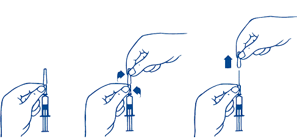

RÉSUMÉ DES CARACTÉRISTIQUES DU PRODUIT
ANSM - Mis à jour le : 09/01/2014
TICOVAC 0,25 ml ENFANTS, suspension injectable en seringue préremplie
Vaccin de l'encéphalite à tiques (virus entier inactivé)
2. COMPOSITION QUALITATIVE ET QUANTITATIVE
Une dose (0,25 ml) contient:
Virus de l'encéphalite à tiques (souche Neudoerfl)1,2 ............................................................ 1,2 microgrammes
1Adsorbé sur de l'hydroxyde d'aluminium hydraté (0,17 mg d'Al3+)
2 Produit sur cellules de fibroblastes embryonnaires de poulet (cellules CEF)
Excipients: chlorure de sodium, phosphate disodique dihydraté, phosphate monopotassique.
Pour la liste complète des excipients, voir rubrique 6.1.
Suspension injectable en seringue préremplie.
Après agitation, le vaccin a l'aspect d'une suspension opaque blanchâtre.
4.1. Indications thérapeutiques
TICOVAC 0,25 ml ENFANTS doit être administré selon les recommandations officielles définissant les besoins et le calendrier de vaccination contre l'encéphalite à tiques.
4.2. Posologie et mode d'administration
Schéma de primovaccination
Le schéma de primovaccination est le même pour toutes les personnes de 1 à 15 ans et consiste en 3 injections de TICOVAC 0,25 ml ENFANTS.
La première et la deuxième injections doivent être réalisées dans un intervalle de 1 à 3 mois. S'il est nécessaire d'obtenir une réponse immunologique rapide, la deuxième injection peut être réalisée 2 semaines après la première. Après les deux premières injections, il est attendu une protection suffisante pour la saison des tiques en cours (voir rubrique 5.1).
La troisième injection doit se faire 5 à 12 mois après la deuxième. Après la troisième injection, il est attendu une durée de protection d’au moins 3 ans.
Pour obtenir une immunité avant le début de la saison d'activité des tiques, c'est-à-dire le printemps, la première et la deuxième injections doivent être pratiquées de préférence en hiver. La troisième injection devra être réalisée de préférence au cours de la saison d'activité des tiques ou au plus tard avant le début de la saison suivante.
|
Immunité de base |
Dose |
Calendrier standard |
Calendrier d’immunisation accélérée |
|
1e injection |
0,25 ml |
Date déterminée |
Date déterminée |
|
2e injection |
0,25 ml |
1 à 3 mois après la 1e vaccination |
14 jours après la 1e vaccination |
|
3e injection |
0,25 ml |
5 à 12 mois après la 2e vaccination |
5 à 12 mois après la 2e vaccination |
Doses de rappel
La première dose de rappel doit être administrée 3 ans après l'injection de la troisième dose (voir rubrique 5.1).
Des doses de rappel supplémentaires doivent être administrées tous les 5 ans après le dernier rappel.
|
Dose de rappel |
Dose |
Calendrier |
|
1e rappel |
0,25 ml |
3 ans après la 3e vaccination |
|
Rappels suivants |
0,25 ml |
Tous les 5 ans |
Le dépassement de l’intervalle entre les doses (calendrier de primovaccination et doses de rappel) peut conduire à une protection inadéquate des sujets contre l’infection pendant cet intervalle (voir rubrique 5.1).
Enfants présentant un déficit immunitaire (y compris en cas de traitement par immunosuppresseurs)
Il n'existe pas de données cliniques spécifiques permettant de définir le schéma vaccinal. Toutefois, la concentration en anticorps spécifiques peut être déterminée 4 semaines après la deuxième injection et une injection supplémentaire peut être réalisée si le taux de protection n'est pas atteint. Ceci s’applique également pour toutes les doses suivantes.
Mode d'administration
Ce vaccin doit être administré par voie intramusculaire dans la partie supérieure du bras (deltoïde).
Chez l'enfant de moins de 18 mois, ou selon le développement et l'état de nutrition de l'enfant, l'injection se fait dans la cuisse (vaste externe). Une attention particulière doit être apportée afin d'éviter une injection intraveineuse accidentelle (voir rubrique 4.4).
Hypersensibilité sévère aux protéines d'œuf, de poulet (par exemple réaction anaphylactique après ingestion orale de protéines d'œuf) et au latex (par exemple réaction anaphylactique) pouvant provoquer des réactions allergiques graves chez les personnes sensibilisées (voir rubrique 4.4).
La vaccination contre l'encéphalite à tiques doit être différée si l'enfant souffre d'une infection aiguë modérée ou sévère (avec ou sans fièvre).
4.4. Mises en garde spéciales et précautions d'emploi
Comme pour tout vaccin administré par voie injectable, une surveillance ainsi qu'un traitement d'urgence adapté doivent être assurés en cas de réaction anaphylactique qui, dans de rares cas, pourrait survenir après injection du vaccin.
En règle générale, l'allergie non grave aux protéines d'œuf ne constitue pas une contre-indication à la vaccination avec TICOVAC 0,25 ml ENFANTS. Néanmoins, les personnes allergiques doivent être vaccinées uniquement sous surveillance médicale et un traitement d'urgence adapté aux réactions d'hypersensibilité doit être disponible si besoin.
Le conditionnement de cette spécialité contient du latex, qui peut causer, chez les personnes allergiques au latex, des réactions allergiques graves.
Les taux de potassium et de sodium sont inférieurs à 1 mmol par dose, c'est à dire « sans potassium et sans sodium ».
L'administration intraveineuse doit être strictement évitée car elle pourrait entraîner des réactions d'intolérance sévères, incluant des réactions d'hypersensibilité avec état de choc.
De la fièvre peut apparaître chez l'enfant en particulier après la première immunisation chez les tout-petits (voir rubrique 4.8). Ces manifestations cessent généralement dans les 24 heures. La fréquence de survenue des épisodes fébriles rapportée après la deuxième vaccination est généralement inférieure à celle rapportée après la première vaccination. Chez les enfants ayant des antécédents de convulsions fébriles ou de forte fièvre après vaccination, une prophylaxie ou un traitement antipyrétique peut être envisagé.
Un taux d'anticorps protecteurs peut ne pas être atteint chez les sujets sous traitement immunosuppresseur.
Lorsqu'il est nécessaire de réaliser un dosage sérologique afin de déterminer la nécessité de réaliser des injections supplémentaires, il est recommandé de faire déterminer la concentration d'anticorps par un laboratoire qualifié. En effet, des réactions croisées avec des anticorps anti-flavivirus préexistants, soit par exposition naturelle, soit par vaccination (par exemple encéphalite japonaise, fièvre jaune, fièvre due à la dengue…) sont possibles et peuvent facilement entraîner des faux positifs.
En cas de maladie auto-immune avérée ou suspectée chez le sujet devant être vacciné, le bénéfice de la vaccination par TICOVAC 0,25 ml ENFANTS doit être évalué par rapport au risque d'aggraver la pathologie existante.
Une évaluation du rapport bénéfice / risque est nécessaire pour déterminer l'intérêt d'une vaccination chez les enfants atteints d'affections cérébrales telles que des affections démyélinisantes actives ou une épilepsie mal contrôlée.
Il n’y a pas de donnée concernant l’effet préventif de TICOVAC 0,25 ml ENFANTS après exposition à une morsure de tiques.
Comme pour tous les vaccins, TICOVAC 0,25 ml ENFANTS peut ne pas induire de protection de l'ensemble des sujets vaccinés. Pour plus d’informations sur l’administration du produit chez les personnes présentant un déficit immunitaire ou traitée par un immunosuppresseur, voir rubrique 4.2.
Une morsure de tique peut transmettre des infections autres que l'encéphalite à tiques, incluant certains agents pathogènes dont la symptomatologie des infections peut ressembler à celle de l'encéphalite à tiques. Les vaccins de l'encéphalite à tiques ne protègent pas contre les injections à Borrelia. Aussi, les signes cliniques et les symptômes traduisant une possible encéphalite à tiques chez un sujet vacciné doivent être correctement évalués de façon à éliminer une autre source potentielle de contamination.
4.5. Interactions avec d'autres médicaments et autres formes d'interactions
Il n’y a pas de donnée sur l'utilisation de TICOVAC 0,25 ml ENFANTS chez la femme enceinte.
Allaitement
Aucune donnée ne permet de savoir si TICOVAC 0,25 ml ENFANTS est excrété dans le lait maternel.
En conséquence, TICOVAC 0,25 ml ENFANTS ne sera administré durant la grossesse et l'allaitement que si une protection contre l'encéphalite à tiques est urgente et après évaluation minutieuse du rapport bénéfice / risque.
4.7. Effets sur l'aptitude à conduire des véhicules et à utiliser des machines
Les fréquences ont été calculées à partir d’une analyse combinée des effets indésirables rapportés après la primovaccination (3088 sujets) de 8 études cliniques menées avec TICOVAC 0,25 ml ENFANTS chez des sujets âgés de 1 à 15 ans. Les fréquences des effets indésirables systémiques observées après la 2e et la 3e vaccination étaient inférieures à celles observées après la primovaccination. Les fréquences des réactions au site d’injection observées après la primovaccination, la 2e et la 3e vaccination étaient comparables.
Les effets indésirables listés dans cette rubrique sont donnés selon la terminologie recommandée de fréquence :
Très fréquent : ≥1/10
Fréquent : ≥1/100 et <1/10
Peu fréquent : ≥1/1000 et <1/100
Rare : ≥1/10 000 et <1/1000
Très rare : <1/10 000
Effets indésirables issus des essais cliniques
|
Classes de systèmes d'organes |
Fréquence |
|||
|
Très fréquent |
Fréquent |
Peu fréquent |
Rare |
|
|
Affections hématologiques et du système lymphatique |
|
|
Lymphadénopathie |
|
|
Troubles du métabolisme et de la nutrition |
|
Diminution de l’appétit |
|
|
|
Affections psychiatriques |
|
Agitation[1] Troubles du sommeil |
|
|
|
Affections du système nerveux |
|
Céphalées |
|
Troubles de la sensibilité Sensations vertigineuses |
|
Affections de l’oreille et du labyrinthe |
|
|
|
Vertiges |
|
Affections gastro-intestinales |
|
Nausées Vomissements |
Douleurs abdominales |
Diarrhée Dyspepsie |
|
Affections de la peau et du tissu sous-cutané |
|
|
|
Urticaire |
|
Affections musculo-squelettiques et systémiques |
|
Myalgies |
Arthralgies |
|
|
Troubles généraux et anomalies au site d'administration |
Réactions au site d’injection[2] (par exemple douleur) |
Pyrexie[3] Malaise[4] Réactions au site d’injection telles que : · Gonflement · Induration · Erythème
|
Frissons |
Prurit au site d’injection |
La fièvre a été mesurée par prise rectale chez les enfants de moins de 3 ans et oralement chez les enfants de 3 ans et plus. L'analyse inclut tous les épisodes fébriles associés dans le temps avec la vaccination avec ou sans lien de causalité rapporté.
La fièvre dépend de l’âge et diminue avec le nombre de vaccinations.
Dans les études de recherche de dose et dans une étude de tolérance, les fréquences de survenue d'épisodes fébriles après la primovaccination étaient :
· Enfants de 1 à 2 ans (n = 262) : fièvre légère (38-39°C) chez 27,9% ; fièvre modérée (39,1-40,0°C) chez 3,4% ; pas de fièvre sévère (> 40°C) ;
· Enfants de 3 à 15 ans (n = 2519) : fièvre légère chez 6,8% ; fièvre modérée chez 0,6% ; pas de fièvre sévère.
Les fréquences de survenue d'épisodes fébriles après la deuxième vaccination ont été généralement inférieures à celles après la primovaccination : 15,6% (41/263) pour les enfants âgés de 1 à 2 ans et 1,9% (49/2522) pour les enfants de 3 à 15 ans.
Effets indésirables issus de la surveillance post-commercialisation
Les effets indésirables additionnels suivants ont été rapportés après la commercialisation.
|
Classes de systèmes d'organes |
Fréquence* |
|
Rare |
|
|
Affections du système immunitaire |
Réaction anaphylactique, hypersensibilité |
|
Affections du système nerveux |
Encéphalite, convulsions (dont fébriles), syndrome méningé, polyneuropathie, troubles moteurs (hémiparésie/hémiplégie faciale, paralysie/parésie, névrite) |
|
Affections oculaires |
Troubles de la vue, photophobie, douleurs oculaires |
|
Affections de l’oreille et du labyrinthe |
Acouphène |
|
Affections respiratoires, thoraciques et médiastinales |
Dyspnée |
|
Affections de la peau et du tissu sous-cutané |
Rash (érythémateux, maculo-papulaire, vésiculaire), érythème, prurit, hyperhidrose |
|
Affections musculo-squelettiques et systémiques |
Douleurs cervicales, raideur musculo-squelettique (y compris raideur de la nuque), douleurs dans les extrémités |
|
Troubles généraux et anomalies au site d’administration |
Démarche anormale, état grippal, asthénie, œdème |
*La limite supérieure de l’intervalle de confiance de 95% de la fréquence de l’effet indésirable est calculée à partir de 3/n dans lequel n représente le nombre de sujets inclus dans tous les essais cliniques avec TICOVAC 0,25 ml ENFANTS. Par conséquent, la fréquence calculée « rare » représente la fréquence maximale théorique pour ces effets.
Effet de classe
Le syndrome de Guillain-Barré a été rapporté comme associé de façon chronologique avec l’administration des vaccins de l’encéphalite à tiques chez les enfants.
Déclaration des effets indésirables suspectés
La déclaration des effets indésirables suspectés après autorisation du médicament est importante. Elle permet une surveillance continue du rapport bénéfice/risque du médicament. Les professionnels de santé déclarent tout effet indésirable suspecté via le système national de déclaration : Agence nationale de sécurité du médicament et des produits de santé (Ansm) et réseau des Centres Régionaux de Pharmacovigilance - Site internet: www.ansm.sante.fr.
5. PROPRIETES PHARMACOLOGIQUES
5.1. Propriétés pharmacodynamiques
Classe pharmacothérapeutique : VACCIN DE L'ENCEPHALITE, Code ATC : J07BA01
L'effet pharmacodynamique du produit consiste à induire une concentration suffisamment élevée d'anticorps anti-virus de l'encéphalite à tiques pour entraîner une protection contre cet agent viral.
Le taux de protection de la génération précédente et de l’actuel vaccin contre l'encéphalite à tiques a été déterminé par la réalisation d'un suivi continu de l'ensemble de la population autrichienne depuis 1984. Dans ce suivi, un taux de protection chez l’enfant supérieur à 98% après achèvement de la primovaccination (3 injections) a été estimé pour la période 1994-2003.
Basé sur un suivi réalisé sur la population autrichienne entre 2000 et 2006, un taux de protection de 99 % a été calculé sans différence significative entre les différentes classes d'âge chez les personnes régulièrement vaccinées. Le taux de protection est au moins aussi élevé chez les sujets ayant reçu les 2 premières injections selon le schéma vaccinal standard et accéléré, que chez les sujets ayant suivi le schéma complet soit les 3 injections. Chez les sujets ayant reçu des injections irrégulières, le taux de protection est significativement plus faible.
Dans les études cliniques réalisées avec TICOVAC 0,25 ml ENFANTS, la séropositivité était définie par méthode ELISA (dosage immuno-enzymatique) avec un titre > 126 U/ml ou par un test de neutralisation (TN) avec un titre ≥ 10.Les taux de séropositivité combinés déterminés par ELISA et TN 21 jours après la deuxième et la troisième vaccinations selon le schéma vaccinal standard sont présentés dans le Tableau 1 et le Tableau 2.
Tableau 1 : Schéma vaccinal standard, taux de séropositivité1 combinés déterminés par ELISA et TN
|
Sujets âgés de 1 à 5 ans |
ELISA2 |
TN2 |
|
||
|
Dose |
2ème |
3ème |
2ème |
3ème |
|
|
Taux de séropositivité1, |
99,4 |
100,0 (493/493) |
98,5 |
99,5 |
|
Tableau 2 : Schéma vaccinal standard, taux1 de séropositivité combinés déterminés par ELISA et TN
|
Sujets âgés de 6 à 15 ans |
ELISA2 |
NT2 |
|
||
|
Dose |
2ème |
3ème |
2ème |
3ème |
|
|
Taux de séropositivité1, |
97,1 (495/511) |
99,8 |
95,5 |
99,7 |
|
1 - Evaluation 21 jours après chaque injection
2 - Seuil de séroconversion : ELISA > 126 U/ml ; TN ≥ 1:10
Les taux de séropositivité les plus élevés déterminés par ELISA et TN ont été atteints une fois la 3ème injection administrée. Il est par conséquent indispensable d'achever la primovaccination en administrant la 3ème dose pour obtenir des taux protecteurs d'anticorps chez presque tous les sujets vaccinés.
5 mois après la deuxième vaccination, plus de 97% des enfants âgés de 1 à 5 ans et plus de 93% des enfants âgés de 6 à 15 ans ont montré une séropositivité pour les taux d’anticorps contre le virus de l’encéphalite à tiques à la fois par ELISA et par TN.
Les résultats d'une étude de suivi étudiant la persistance des anticorps contre le virus de l'encéphalite à tiques sont en faveur d'un premier rappel vaccinal dans les 3 ans suivant la primovaccination. Une analyse de la persistance des anticorps jusqu’à 58 mois après la première dose de rappel a montré des taux de séropositivité élevés par TN pour toutes les catégories d’âge : 96,6% chez les enfants âgés de 1 à 2 ans, 100% chez les enfants âgés de 3 à 6 ans et 98,1% chez les enfants âgés de 7 à 15 ans soutenant le schéma vaccinal avec un intervalle de 5 ans entre les rappels.
Le vaccin TICOVAC induit des titres d’anticorps neutralisant statistiquement équivalents contre les sous-types du virus de l’encéphalite à tiques Européens, de Sibérie et d’Europe Orientale. Dans une étude clinique publiée, il a également été observé des titres élevés contre le virus de la fièvre hémorragique d’Omsk, cependant ces titres étaient plus faibles que ceux des sous-types du virus de l’encéphalite à tiques.
5.2. Propriétés pharmacocinétiques
Sans objet.
5.3. Données de sécurité préclinique
Les études effectuées chez l'animal n'ont pas montré d'effets nocifs de l'utilisation de TICOVAC 0,25 ml ENFANTS chez l'homme.
Albumine humaine, chlorure de sodium, phosphate disodique dihydraté, phosphate monopotassique, eau pour préparations injectables, saccharose, hydroxyde d'aluminium hydraté.
En l'absence d'études de compatibilité, TICOVAC 0,25 ml ENFANTS ne doit pas être mélangé avec d'autres médicaments.
30 mois pour la seringue préremplie avec/sans aiguille intégrée.
6.4. Précautions particulières de conservation
A conserver au réfrigérateur (entre 2°C et 8°C).
Conserver la seringue dans l'emballage extérieur à l'abri de la lumière.
Ne pas congeler.
6.5. Nature et contenu de l'emballage extérieur
Toutes les présentations peuvent ne pas être commercialisées.
6.6. Précautions particulières d’élimination et de manipulation
Le vaccin doit être amené à température ambiante avant utilisation.
Le vaccin doit être bien agité avant administration pour mélanger suffisamment la suspension. Après agitation, TICOVAC 0,25 ml ENFANTS se présente sous la forme d'une suspension homogène blanchâtre opaque. Le vaccin doit être inspecté visuellement afin de mettre en évidence la présence de particules étrangères et/ou un changement de l'aspect physique, avant l'administration. Dans l'un ou l'autre de ces cas, jeter le vaccin.
Tout produit non utilisé ou déchet doit être éliminé conformément à la réglementation en vigueur.
Enlever le protège-aiguille comme suit :
1. Tenir la seringue à la base du protège-aiguille fixé sur le récipient en verre (fig. 1).
2. De l'autre main, saisir le haut du protège-aiguille entre le pouce et l'index, et le tourner jusqu'à rupture des points de fixation (témoin d'effraction) (fig. 2).
3. Retirer le protège-aiguille par un mouvement vertical (fig.3).

Fig. 1 Fig. 2 Fig. 3
Après avoir retiré le protège-aiguille, TICOVAC 0,25 ml ENFANTS doit être utilisé immédiatement.
Afin d'éviter la perte de stérilité et/ou l'obstruction de l'aiguille, ne pas la laisser sans protection pendant une période prolongée. Par conséquent, le protège-aiguille ne doit être retiré qu'après agitation et juste avant utilisation.
L'administration du vaccin doit être consignée par le médecin sur le carnet de vaccination ou de santé avec le numéro de lot. Une étiquette détachable est présente sur chaque seringue préremplie.
7. TITULAIRE DE L’AUTORISATION DE MISE SUR LE MARCHE
BAXTER SAS
6, AVENUE LOUIS PASTEUR
78310 MAUREPAS
FRANCE
8. NUMERO(S) D’AUTORISATION DE MISE SUR LE MARCHE
· 367 749-9 ou 34009 367 749 9 5: 0,25 ml de suspension injectable en seringue préremplie (verre type I) avec aiguille. Boîte de 1.
· 367 750-7 ou 34009 367 750 7 7: 0,25 ml de suspension injectable en seringue préremplie (verre type I) avec bouchon-piston (caoutchouc halogénobutyl) sans aiguille. Boîte de 10.
· 367 751-3 ou 34009 367 751 3 8: 0,25 ml de suspension injectable en seringue préremplie (verre type I) avec aiguille. Boîte de 10.
· 367 753-6 ou 34009 367 753 6 7: 0,25 ml de suspension injectable en seringue préremplie (verre type I) avec bouchon-piston (caoutchouc halogénobutyl) sans aiguille. Boîte de 20.
· 367 754-2 ou 34009 367 754 2 8: 0,25 ml de suspension injectable en seringue préremplie (verre type I) avec aiguille. Boîte de 20.
· 367 755-9 ou 34009 367 755 9 6: 0,25 ml de suspension injectable en seringue préremplie (verre type I) avec bouchon-piston (caoutchouc halogénobutyl) sans aiguille. Boîte de 100.
· 367 756-5 ou 34009 367 756 5 7: 0,25 ml de suspension injectable en seringue préremplie (verre type I) avec aiguille. Boîte de 100.
9. DATE DE PREMIERE AUTORISATION/DE RENOUVELLEMENT DE L’AUTORISATION
[à compléter par le titulaire]
10. DATE DE MISE A JOUR DU TEXTE
[à compléter par le titulaire]
Sans objet.
12. INSTRUCTIONS POUR LA PREPARATION DES RADIOPHARMACEUTIQUES
Sans objet.
Liste I.